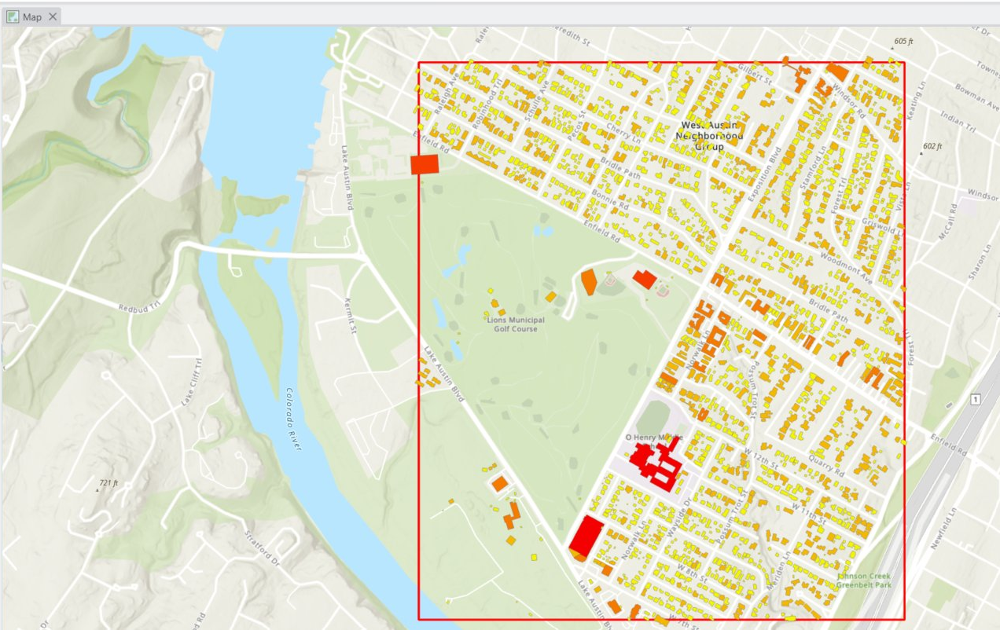
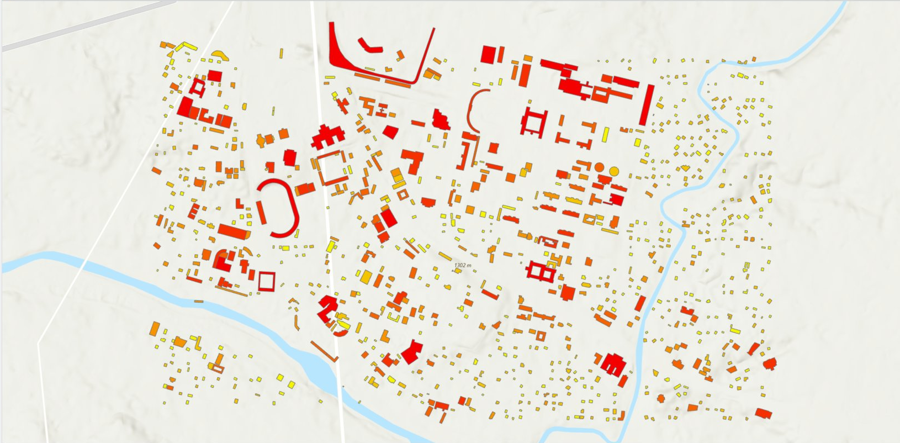
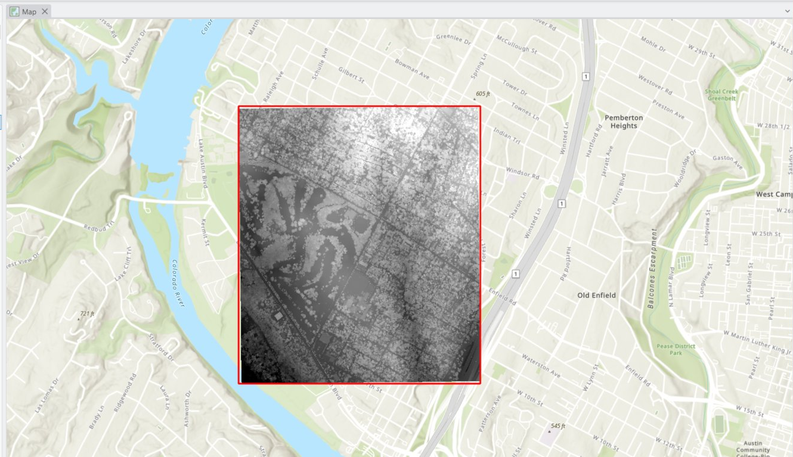
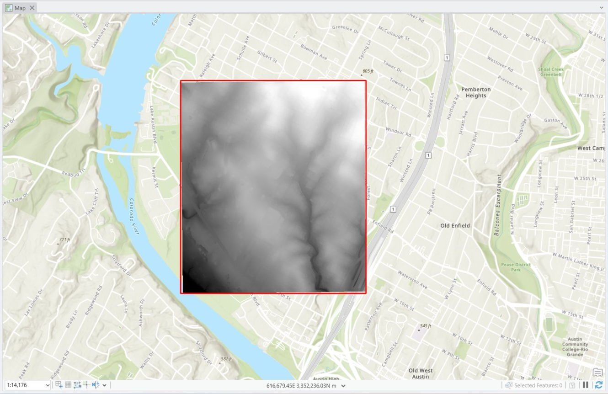
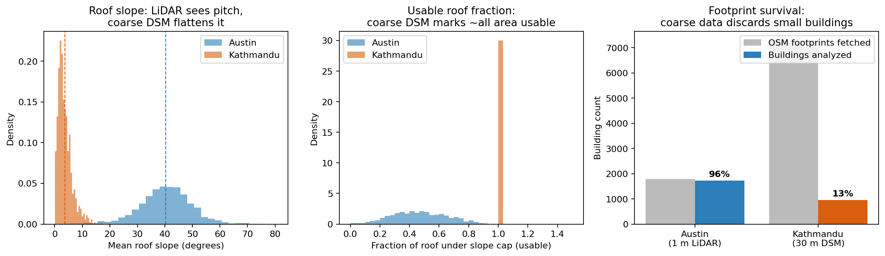
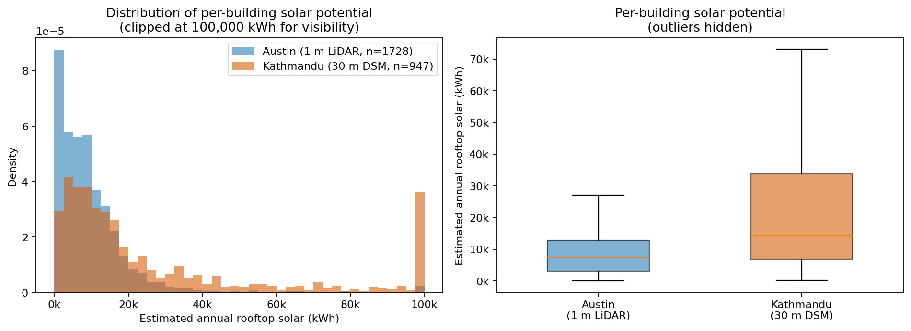

Most rooftop-solar demos run a clean pipeline on a US city with high-quality LiDAR and stop there. But in most of the world — including Nepal — that ideal data does not exist. Open LiDAR for Kathmandu is simply not available.
So this project turns the data gap into the experiment: run the identical method where LiDAR exists (Austin, 1 m) and where it doesn't (Kathmandu, 30 m open DSM), then ask what is gained and lost.
The real question isn't "which city gets more sun" — it's how much does elevation-data resolution distort a solar estimate, and in which direction.

The Austin side starts from a raw 24.6-million-point USGS 3DEP LiDAR tile. In ArcGIS Pro the point cloud is filtered and rasterized into two 1 m surfaces: a DSM (first returns — roof and canopy tops) and a ground-filtered DTM (bare earth). Correct coordinate handling (EPSG 6343, metres, NAVD88) keeps slope and area honest.
The complete workflow — the LAZ-to-LAS conversion, the LAS Dataset to Raster parameters, the ground filtering, and the CRS verification — is documented step by step with screenshots.
Read the full LiDAR processing methodology →

- Austin: process raw LiDAR (LAZ → LAS dataset → 1 m DSM/DTM) in ArcGIS Pro; verify CRS (EPSG 6343, metres).
- Kathmandu: download an open Copernicus GLO-30 DSM, reproject to UTM 45N (EPSG 32645) in Python.
- Both: derive slope and aspect from the DSM, pull OpenStreetMap building footprints, and aggregate per building (rasterio + geopandas).
- Estimate annual rooftop kWh per building: usable area × irradiation × aspect score × panel efficiency × performance ratio — the same shared module for both cities.
Identical code runs both cities. Only the input surface and its resolution change — that is the methods-transfer design.
| Metric | Austin · 1 m LiDAR | Kathmandu · 30 m DSM |
|---|---|---|
| Buildings analyzed | 1,728 | 947 |
| Footprint survival | 96.3% | 13.0% |
| Mean roof slope | 40.3° | 3.7° |
| Usable roof fraction | 0.47 | 1.00 |
| Median kWh / building | 7,404 | 14,355 |
Coarse open data doesn't just add noise — it adds directional bias. The 30 m DSM flattens roof pitch (40° → 4°), so it treats nearly every roof as an ideal flat panel and over-credits usable area. It also drops small buildings: only 13% of Kathmandu footprints survive, biasing the sample toward large roofs.
Together these inflate Kathmandu's per-building median above Austin's — an artifact of resolution, not a real difference.
The full statistical comparison — distribution tests, the slope-flattening and footprint-survival mechanisms, and an advantages/disadvantages breakdown of each data environment — is laid out in detail.
Read the full comparative analysis →

- Global horizontal irradiation values are placeholders (Austin 1,700; Kathmandu 1,800 kWh/m²/yr); absolute totals are provisional, relative within-city rankings are robust.
- The Kathmandu result is a footprint-level screen, not roof-facet design — a 30 m DSM cannot resolve individual roof planes.
- First-order energy model; no inter-building shading in the Python step.
- OSM footprint completeness and the choice of footprint dataset materially affect Kathmandu totals.
Open the code & methodology
Reproducible Python pipeline, the full LiDAR processing methodology, and the comparative analysis on GitHub.